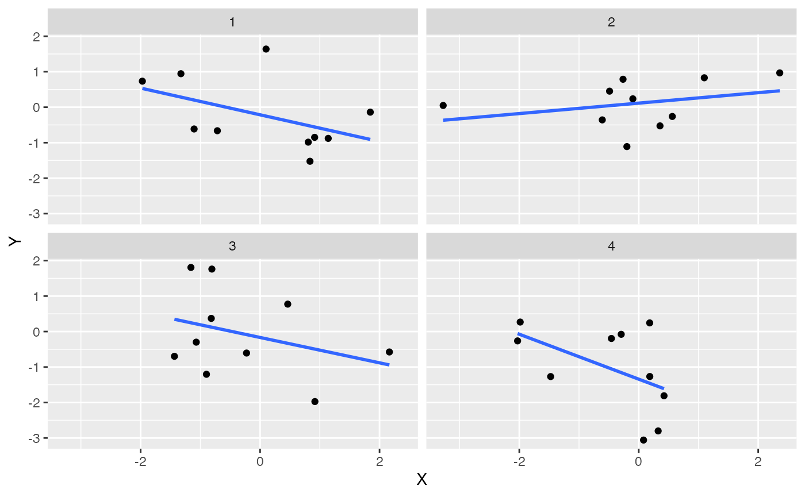
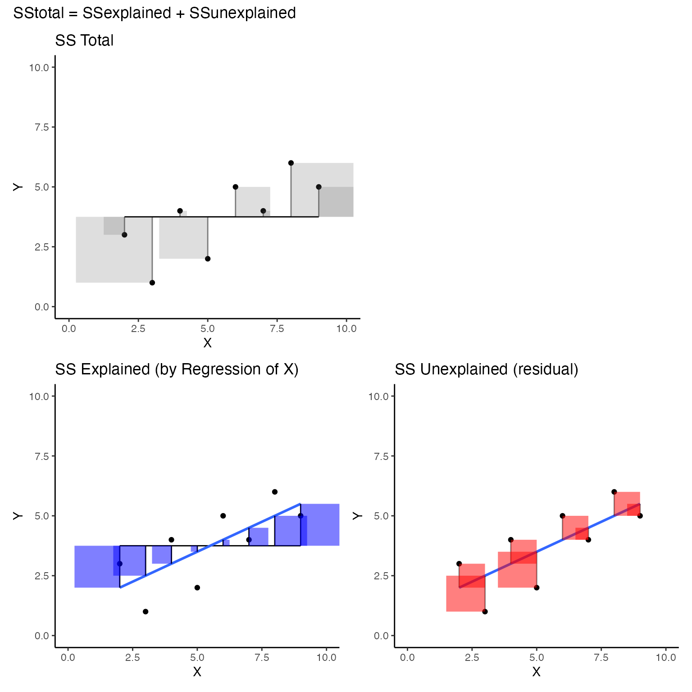

Lab 12 Regression
Matthew J. C. Crump
12/7/2020
Lab12_Regression.RmdReadings
Vokey & Allen (2018), Chapter 8; Abdi et al. (2009), Chapters 3 and 4; Crump et al. (2018), 3.5.
Overview
- Practical: Performing linear regressions with R
- Concept I: The best fit line and least squares
- Concept II: \(R^2\) and \(F\)
- Advanced Concept: Best fit line by brute force search
Practical I: Simple linear Regression in R
Some questions we’ll answer in this section:
- How do I conduct a linear regression in R?
- How do I find the best fit line in R?
- How do I graph the best fit line with ggplot2?
lm()
Base R comes with the lm() function, short for linear models, that can perform linear regression among other analyses. We will come back to lm() in later labs.
?lmHere are some basic examples of computing a linear regression with lm(). I step through the pieces after this code chunk.
# Dataframe with dependent and independent variables
some_data <- data.frame(Y_dv= c(1,2,4,3,5,4,6,5),
X_iv= c(3,5,4,2,6,7,8,9))
#compute linear regression,
lm(Y_dv ~ X_iv, data=some_data)
#>
#> Call:
#> lm(formula = Y_dv ~ X_iv, data = some_data)
#>
#> Coefficients:
#> (Intercept) X_iv
#> 1.0 0.5
# saving and output
save_model <- lm(Y_dv ~ X_iv, data=some_data)
summary(save_model)
#>
#> Call:
#> lm(formula = Y_dv ~ X_iv, data = some_data)
#>
#> Residuals:
#> Min 1Q Median 3Q Max
#> -1.50 -0.75 0.25 1.00 1.00
#>
#> Coefficients:
#> Estimate Std. Error t value Pr(>|t|)
#> (Intercept) 1.000 1.126 0.888 0.4087
#> X_iv 0.500 0.189 2.646 0.0382 *
#> ---
#> Signif. codes: 0 '***' 0.001 '**' 0.01 '*' 0.05 '.' 0.1 ' ' 1
#>
#> Residual standard error: 1.225 on 6 degrees of freedom
#> Multiple R-squared: 0.5385, Adjusted R-squared: 0.4615
#> F-statistic: 7 on 1 and 6 DF, p-value: 0.03825
# r and r^2
cor.test(some_data$Y_dv,some_data$X_iv)
#>
#> Pearson's product-moment correlation
#>
#> data: some_data$Y_dv and some_data$X_iv
#> t = 2.6458, df = 6, p-value = 0.03825
#> alternative hypothesis: true correlation is not equal to 0
#> 95 percent confidence interval:
#> 0.06031428 0.94817953
#> sample estimates:
#> cor
#> 0.7337994
summary(save_model)$r.squared
#> [1] 0.5384615
sqrt(summary(save_model)$r.squared)
#> [1] 0.7337994Use long-data format
lm() requires data to be long-format (one observation per row), and in a data.frame or similar (e.g., data.table, tibble also work). By convention, I will use Y to refer to the dependent variable, and X to refer to the independent variable.
# Dataframe with dependent and independent variables
some_data <- data.frame(Y_dv= c(1,2,4,3,5,4,6,5),
X_iv= c(3,5,4,2,6,7,8,9))Specify the formula
The linear regression is performed below. There two basic inputs lm(formula = , data=). The formula supplied below is Y_dv ~ X_iv. The dependent variable is always placed on the left side (Y_dv), and the independent variable is placed on the right side (X_dv). Order matters. In this case, we are explaining/predicting variation in Y_dv as a function of variation in X_dv.
#compute linear regression,
lm(Y_dv ~ X_iv, data=some_data)
#>
#> Call:
#> lm(formula = Y_dv ~ X_iv, data = some_data)
#>
#> Coefficients:
#> (Intercept) X_iv
#> 1.0 0.5In class we learned that Pearson’s correlation coefficient, \(r\), is related to the coefficient of determination, \(R^2\), which measures the proportion of variance explained. lm() returns \(R^2\), but not \(r\). Below is a quick demonstration that square-rooting \(R^2\) from lm(), gives the same value as \(r\) from cor.test().
# r and r^2
cor.test(some_data$Y_dv,some_data$X_iv)
#>
#> Pearson's product-moment correlation
#>
#> data: some_data$Y_dv and some_data$X_iv
#> t = 2.6458, df = 6, p-value = 0.03825
#> alternative hypothesis: true correlation is not equal to 0
#> 95 percent confidence interval:
#> 0.06031428 0.94817953
#> sample estimates:
#> cor
#> 0.7337994
cor.test(some_data$Y_dv,some_data$X_iv)$estimate^2
#> cor
#> 0.5384615
summary(save_model)$r.squared
#> [1] 0.5384615
sqrt(summary(save_model)$r.squared)
#> [1] 0.7337994The output prints the y-intercept and slope needed to draw the best-fit line from the regression.
Model summary
In addition, if the output is assigned to an object, then it can be inspected and manipulated further. For example, additional information can be printed with the summary function.
save_model <- lm(Y_dv ~ X_iv, data=some_data)
summary(save_model)
#>
#> Call:
#> lm(formula = Y_dv ~ X_iv, data = some_data)
#>
#> Residuals:
#> Min 1Q Median 3Q Max
#> -1.50 -0.75 0.25 1.00 1.00
#>
#> Coefficients:
#> Estimate Std. Error t value Pr(>|t|)
#> (Intercept) 1.000 1.126 0.888 0.4087
#> X_iv 0.500 0.189 2.646 0.0382 *
#> ---
#> Signif. codes: 0 '***' 0.001 '**' 0.01 '*' 0.05 '.' 0.1 ' ' 1
#>
#> Residual standard error: 1.225 on 6 degrees of freedom
#> Multiple R-squared: 0.5385, Adjusted R-squared: 0.4615
#> F-statistic: 7 on 1 and 6 DF, p-value: 0.03825
summary(save_model)$r.squared
#> [1] 0.5384615ggplot2
Best fit lines can easily be displayed on scatterplots with ggplot2, here is a basic example. Note that I have only supplied the dataframe with the X and Y variables. geom_point() adds the dots, and geom_smooth() computes the regression and adds the line using the lm() method we described above. It is possible to add confidence intervals by setting se=TRUE, but if it’s not clear to you how the intervals are computed, you might not decide to use this default.
geom_smooth
ggplot(some_data, aes(x=X_iv, y=Y_dv))+
geom_point()+
geom_smooth(method='lm',se=FALSE)If you had many sets of X Y data specified in a data frame you can create multiple scatterplots, each with their own best fit line, using facet_wrap().
some_data2 <- data.frame(Y = rnorm(4*10,0,1),
X = rnorm(4*10,0,1),
set = rep(1:4,each=10))
ggplot(some_data2, aes(x=X, y=Y))+
geom_point()+
geom_smooth(method='lm', se=FALSE)+
facet_wrap(~set)
Add equations and model info
ggplot2 does not automatically show the regression equation or \(R^2\) values, but they can be added with annotations. Or, you could find an extension package that might do the thing you are looking for. For example, there are numerous extensions to ggplot2, https://exts.ggplot2.tidyverse.org/gallery/. One of them is ggpmisc, which can help with adding these details to a plot.
ggpmisc::stat_poly_eq() can add the \(R^2\) value to the plot.
library(ggpmisc)
formula <- y ~ x
ggplot(some_data, aes(x= X_iv, y = Y_dv)) +
geom_point() +
stat_smooth(method = "lm", formula = formula) +
stat_poly_eq(formula = formula, parse = TRUE)Or, you could print the regression line equation, or both. I’ll refer you to examples here for more info on using ggpmisc.
ggplot(some_data, aes(x= X_iv, y = Y_dv)) +
geom_point() +
geom_smooth(method = "lm", formula = formula) +
stat_poly_eq(aes(label = stat(eq.label)), formula = formula,
parse = TRUE)Concept I: The best fit line and least squares
The code chunk below generates a linear regression animation using ggplot2 and gganimate.
library(ggplot2)
library(gganimate)
library(dplyr)
d <- mtcars
fit <- lm(mpg ~ hp, data = d)
d$predicted <- predict(fit) # Save the predicted values
d$residuals <- residuals(fit) # Save the residual values
coefs<-coef(lm(mpg ~ hp, data = mtcars))
coefs[1]
#> (Intercept)
#> 30.09886
coefs[2]
#> hp
#> -0.06822828
x<-d$hp
move_line<-c(seq(-6,6,.5),seq(6,-6,-.5))
total_error<-length(length(move_line))
cnt<-0
for(i in move_line){
cnt<-cnt+1
predicted_y <- coefs[2]*x + coefs[1]+i
error_y <- (predicted_y-d$mpg)^2
total_error[cnt]<-sqrt(sum(error_y)/32)
}
move_line_sims<-rep(move_line,each=32)
total_error_sims<-rep(total_error,each=32)
sims<-rep(1:50,each=32)
d<-d %>% slice(rep(row_number(), 50))
d<-cbind(d,sims,move_line_sims,total_error_sims)
anim<-ggplot(d, aes(x = hp, y = mpg)) +
geom_abline(intercept = 30.09886+move_line_sims, slope = -0.06822828, aes(linetype='d'), color= 'red')+
lims(x = c(0,400), y = c(-10,40))+
geom_segment(aes(xend = hp, yend = predicted+move_line_sims, color="red"), alpha = .5) +
geom_point() +
geom_rect(aes(ymin=predicted+move_line_sims, ymax=mpg, xmin=hp, xmax=hp+abs(predicted)+abs(residuals)+abs(move_line_sims), fill = total_error_sims), alpha = .2)+
scale_fill_gradient(low="lightgrey", high="red")+
geom_smooth(method = "lm", se = FALSE, color = "blue") +
theme_classic()+
theme(legend.position="none")+
xlab("X")+ylab("Y")+
transition_manual(frames=sims)+
enter_fade() +
exit_fade()+
ease_aes('sine-in-out')
animate(anim,fps=5)This animation shows two key concepts we will reinforce. First, the regression line is the “best fit line”. And, the “best fit line” is the one that minimizes the sum of the squared deviations between each point and the line.
The blue line represents the best fit line found by linear regression. The roving black line represents other possible lines. For simplicity, the black line has the same slope, but the intercept changes so it moves up and down. As the black line moves, the little red lines show the error between the black line and each data point. The shaded rectangle for each dot represents the squared error. I shaded the the error squares…as the black line moves away from the true regression line, the error squares get bigger and bigger, and redder and redder. This indicates the fit between the line is getting worse (because the error is getting bigger), as the line moves away from the best line. As the black line moves toward the best fit line, you can see the error squares getting smaller, and I shaded them less red, to visually indicate less overall error. When the black line converges on the blue line, we have found the best fit line, the one that minimizes the sum of the squared deviations.
Illustrating regression concepts with R
The animation example is modified from Crump et al. (2018) (I added the little rectangles to indicate the squared error).
In this concept section we will use R to create a graph like the above animation. Our goal is to see if we can use R to visually illustrate concepts of linear regression. For example, we can already plot data points as a scatterplot, and we can plot the regression line. It would be nice if we could visualize the error between each data point and the line, and perhaps also see that this error is smallest when we use the best fit line, and not some other line.
Create a scatterplot
Here is the sample data we were using before:
some_data <- data.frame(Y= c(1,2,4,3,5,4,6,5),
X= c(3,5,4,2,6,7,8,9))
ggplot(some_data, aes(x=X, y=Y))+
geom_point()Compute regression equation
We can compute the regression line using lm() to get the y-intercept and slope.
lm(Y~X, data=some_data)
#>
#> Call:
#> lm(formula = Y ~ X, data = some_data)
#>
#> Coefficients:
#> (Intercept) X
#> 1.0 0.5The regression line represents the best predictions for values of Y as a function of X.
Generate predicted values
We can use the predict.lm() function to compute each of the predictions for us. Thus, when X is the values 1 to 8, we see the following predictions for Y.
predict.lm(lm(Y~X, data=some_data))
#> 1 2 3 4 5 6 7 8
#> 2.5 3.5 3.0 2.0 4.0 4.5 5.0 5.5Let’s add the predictions into the graph. We will do this by adding a new column to the data.frame. Using mutate() we can run the prediction function on the existing columns for X and Y.
some_data <- data.frame(Y= c(1,2,4,3,5,4,6,5),
X= c(3,5,4,2,6,7,8,9)) %>%
mutate(Y_pred = predict.lm(lm(Y~X)))
ggplot(some_data, aes(x=X, y=Y))+
geom_point()+
geom_point(aes(y=Y_pred), color='red')
Add regression line
Lets’s also add the regression line in:
ggplot(some_data, aes(x=X, y=Y))+
geom_point()+
geom_smooth(method='lm', se=FALSE)+
geom_point(aes(y=Y_pred), color='red')Visualize residual error
The next step is to visually depict the error between each black dot (a data point), and the blue line. This will involve drawing vertical lines between each black dot, and the red dot representing the prediction of the blue line. We can use geom_segment() to draw lines.
some_data <- data.frame(Y= c(1,2,4,3,5,4,6,5),
X= c(3,5,4,2,6,7,8,9)) %>%
mutate(Y_pred = predict.lm(lm(Y~X))) %>%
mutate(Y_error = Y - Y_pred)
ggplot(some_data, aes(x=X, y=Y))+
geom_point()+
geom_smooth(method='lm', se=FALSE)+
geom_point(aes(y=Y_pred), color='red') +
geom_segment(aes(xend = X, yend = Y-Y_error), alpha = .5)The blue line happens to be the best fit line, it is the one that minimizes the sum of the squared deviations. We have drawn the deviations as little lines between each black dot and the line.
Visualize error as squares
Next, let’s illustrate the deviations as squares, which will better depict the actual quantity that is being summed over. We use geom_rect() to draw rectangles.
some_data <- data.frame(Y= c(1,2,4,3,5,4,6,5),
X= c(3,5,4,2,6,7,8,9)) %>%
mutate(Y_pred = predict.lm(lm(Y~X))) %>%
mutate(Y_error = Y - Y_pred)
ggplot(some_data, aes(x=X, y=Y))+
geom_point()+
geom_smooth(method='lm', se=FALSE)+
geom_point(aes(y=Y_pred), color='red') +
geom_segment(aes(xend = X, yend = Y-Y_error), alpha = .5)+
geom_rect(aes(ymin=Y,
ymax=Y_pred,
xmin=X,
xmax=X+Y_error),
alpha = .2)These should look like squares, but they don’t because the X and Y axes aren’t exactly the same scale, and the figure height and width aren’t exactly square :
ggplot(some_data, aes(x=X, y=Y))+
geom_point()+
geom_smooth(method='lm', se=FALSE)+
geom_point(aes(y=Y_pred), color='red') +
geom_segment(aes(xend = X, yend = Y-Y_error), alpha = .5)+
geom_rect(aes(ymin=Y,
ymax=Y_pred,
xmin=X,
xmax=X+Y_error),
alpha = .2)+
coord_cartesian(xlim=c(0,10),
ylim=c(0,10))Visualize error for “worse” fit lines
Finally, let’s try one or two more graphs to illustrate that if we drew different lines, they would not be the best fit lines. If we drew a “worse” line, we should see that altogether, the squared error boxes get bigger and bigger. For example, the new red line below does not go through the black dots (the line was shifted up), and the squared errors are much larger than the ones for the blue best fit line.
some_data <- data.frame(Y= c(1,2,4,3,5,4,6,5),
X= c(3,5,4,2,6,7,8,9)) %>%
mutate(Y_pred = predict.lm(lm(Y~X))+2) %>%
mutate(Y_error = Y - Y_pred)
ggplot(some_data, aes(x=X, y=Y))+
geom_point()+
geom_smooth(method='lm', se=FALSE)+
geom_point(aes(y=Y_pred), color='red') +
geom_line(aes(x=X,y=Y_pred), color='red')+
geom_segment(aes(xend = X, yend = Y-Y_error), alpha = .5)+
geom_rect(aes(ymin=Y,
ymax=Y_pred,
xmin=X,
xmax=X+Y_error),
alpha = .2)+
coord_cartesian(xlim=c(0,10),
ylim=c(0,10))Let’s see if we can make a faceted graph, showing the red line moving away from the blue in an upward direction in four steps. This should provide good visual evidence of the error squares growing in size.
some_data <- data.frame(Y= c(1,2,4,3,5,4,6,5),
X= c(3,5,4,2,6,7,8,9)) %>%
mutate(Y_pred = predict.lm(lm(Y~X)))
some_data <- rbind(some_data,
some_data,
some_data,
some_data) %>%
mutate(step = rep(1:4,each = 8),
Y_pred = Y_pred + rep(c(.5,1,1.5,2), each = 8)) %>%
mutate(Y_error = Y - Y_pred)
ggplot(some_data, aes(x=X, y=Y))+
geom_smooth(method='lm', se=FALSE)+
geom_point(aes(y=Y_pred), color='red') +
geom_line(aes(x=X,y=Y_pred), color='red')+
geom_point()+
geom_segment(aes(xend = X, yend = Y-Y_error), alpha = .5)+
geom_rect(aes(ymin=Y,
ymax=Y_pred,
xmin=X,
xmax=X+Y_error),
alpha = .2)+
coord_cartesian(xlim=c(0,10),
ylim=c(0,10)) +
facet_wrap(~step)Concept II: \(R^2\), F, and variance explained
Wright (n.d.) is credited on wikipedia with coining the term coefficient of determination for \(R^2\). It was interesting to read that paper and think about the term coefficient of determination. Wright discussed how plain old correlations could obviously be caused by multiple causal variables, which is one reason why correlation does not equal causation. He sought methods to break a correlation into component causes or paths, and this seems to inspire the rather loaded inspirational term coefficient of determination. I say this term is inspirational because squaring an \(r\)-value and using deterministic language doesn’t magically allow one to identify causal forces from a correlation. Nevertheless, the concept of \(R^2\) does involve a systematic process of categorizing components of correlation into different parts, usually parts that can be explained and a leftover part that can’t be explained.
The word “explained” doesn’t have the common meaning that we actually understand anything, say about the causal relationship between one thing and another. It has a limited statistical meaning. Something like some variation in Y can be expressed in terms of a limited geometric relationship derived from variation in X, and we call some of that relationship “explained”, and call another part “unexplained”. Or, something like, if we have some 2-d points in a scatterplot, we can choose to say that each point is composed of three parts. The mean of Y, plus a prediction from a line that we drew through the points, plus some extra part that has nothing to do with the line.
Explaining variance
Imagine you are trying to explain some complicated thing, and you want to keep track of how much of that thing you have explained. You could use a formula like this:
\(\text{Total stuff to explain} = \text{Explained stuff} + \text{Unexplained stuff}\)
This conceptual formula partitions the total stuff needing explanation into two parts, explained and unexplained. If you could assign numbers to this formula, then you could keep track of quantities of explanation. \(R^2\) and \(F\) values are related statistics that give a ratio quantity relating the amount of explained stuff to unexplained stuff.
\(R^2\) proportion of variance explained
Imagine you wanted to know a proportion of explained stuff, or a ratio of much you have explained in relation to the total amount of stuff that could be explained. The proportion would be 0 when you haven’t explained anything, and go to 1 as you explain everything that could be explained.
\(1 = \frac{\text{Explained} + \text{Unexplained}}{\text{Total stuff to explain}}\)
\(\text{Proportion explained} = \frac{\text{Explained}}{\text{Total}} =(1- \frac{\text{Unexplained}}{\text{Total}})\)
This is how \(R^2\) is calculated. The quantities are replaced with a sum of squares (\(SS\)) representing the total amount of variance to be explained. \(SS_{Total}\) is split up into parts that “can be explained” (e.g., by the regression line), and parts that remain “unexplained” (residual error).
\(R^2 = 1 - \frac{SS_{unexplained}}{SS_{Total}} = \frac{SS_{explained}}{SS_{Total}}\)
Note, that \(R^2\) must go from 0 to 1, because it is set up as a ratio between a part of a whole (the explained part), and a whole (all of the things needing explaining). The explained part can go anywhere from 0 (explaining nothing) to 100% (explaining everything), so the proportion must go from 0 to 1.
F-statistic, explained over unexplained
The F statistic is another way to use the general formula to create a ratio that gets larger as you are able to explain more than you can’t.
\(F = \frac{Explained}{Unexplained}\)
Consider how the F ratio works. It is not bounded by 0 and 1. But, the number 1 is still important, it is a tipping point for your explanation.
If \(explained = unexplained\) then, \(F =1\).
If \(explained > unexplained\) then, \(F > 1\);
and if \(explained < unexplained\) then, \(F < 1\).
F-statistics use measures of variance, which are sums of squares divided by relevant degrees of freedom.
\(F = \frac{SS_{Explained}/df1}{SS_{Unexplained}/df2} = \frac{MS_{Explained}}{MS_{Unexplained}}\)
Transforming \(R^2\) to \(F\)
Abdi et al. (2009) provide a formula (chapter 3) that shows Fs can be converted from \(R^2\).
\(F = \frac{R^2}{1-R^2} \times (S-2)\)
The numerator is \(R^2\), which we have previously defined as the proportion of variance explained; and the denominator is the proportion of variance unexplained. So, this formula again presents F as a ratio of explained over unexplained variance.
Visualizing the sums of squares
Let’s try to fill in the blanks so that we can see \(R^2\) in this way:
\(R^2 = (1- \frac{\text{Unexplained}}{\text{Total}}) = \frac{\text{Explained}}{\text{Total}}\)
We begin with a Y variable and X variable. We are going to use the variability in X as an “explanation” of the variability in Y.
How does this data relate to the formula and to the task of explanation? What are we trying to explain? In this case, the Y variable is taking the place of the dependent measure. The Y variable has numbers that are different, it has variation. So in general language, we are trying to “explain” the variation in Y.
SS total
In order to put a number into the denominator of our general formula, we need to quantify the total amount of variation in Y. There are two ways we have done that previously, using sums of squares, or the variance (which divides the sums of squares). \(SS_{total}\) uses the mean of Y as a starting point, and sums up all of the squared deviations from the mean. So:
\(SS_{total} = \sum{(Y_i - \bar{Y})^2}\)
The scatterplot below visualizes \(SS_total\); but, instead of a regression line as we saw earlier, the red line represents the mean of Y. So, the deviations between each dot and the red line represent the components that are added up to produce \(SS_total\) for Y. Specifically, the sum of the area in all the error squares is taken as the total amount of stuff that needs to be explained. Slightly more formally, the squared deviations represent departures from the mean of Y. If all of the data in Y had the same number, there would be no departures from the mean, and the mean would “explain everything”, leaving nothing left for any other variable to explain.
some_data <- data.frame(Y= c(1,2,4,3,5,4,6,5),
X= c(3,5,4,2,6,7,8,9)) %>%
mutate(Y_pred = mean(Y)) %>%
mutate(Y_error = Y - Y_pred)
(total_plot <- ggplot(some_data, aes(x=X, y=Y))+
geom_point()+
geom_line(aes(y=Y_pred), color='black')+
geom_segment(aes(xend = X, yend = Y-Y_error), alpha = .5)+
geom_rect(aes(ymin=Y,
ymax=Y_pred,
xmin=X,
xmax=X+Y_error),
alpha = .2)+
coord_cartesian(xlim=c(0,10),
ylim=c(0,10))+
theme_classic()+
ggtitle("SS Total")
)Before moving on, let’s tie the word “explanation” to the idea of prediction. If we were trying to make guesses about the numbers in Y we could use the mean of Y as a best guess or prediction. According to a least squares criterion, the mean is in the center of the data, and it is the value produces the smallest sum of squared deviations. If you guessed the mean for Y every time you sampled a number for Y, you’d be off by some amount each time, and squaring and summing these little errors would give you a total that you could say represents all of variation not accounted for by the mean.
In linear regression we ask whether we can improve our prediction beyond using mean of Y. For example, if we had another variable like X, could we make use of that variable to improve predictions about Y? In other words, is there a way we can line up Y values and X values in such a way that reduces the sum of squared errors. If this could be achieved, then knowing something about the mean of Y and knowing something about X should reduce prediction error.
SS unexplained (residuals)
Consider now the regression line, and the squared deviations that we produced in the first concept section. I colored the error squares red to flag the fact that the blue regression line does not explain these deviations from the blue line.
some_data <- data.frame(Y= c(1,2,4,3,5,4,6,5),
X= c(3,5,4,2,6,7,8,9)) %>%
mutate(Y_pred = predict.lm(lm(Y~X))) %>%
mutate(Y_error = Y - Y_pred)
(res_plot <- ggplot(some_data, aes(x=X, y=Y))+
geom_point()+
geom_smooth(method='lm', se=FALSE)+
geom_segment(aes(xend = X, yend = Y-Y_error), alpha = .5)+
geom_rect(aes(ymin=Y,
ymax=Y_pred,
xmin=X,
xmax=X+Y_error),
alpha = .5,
fill = "red")+
coord_cartesian(xlim=c(0,10),
ylim=c(0,10))+
theme_classic()+
ggtitle("SS Unexplained (residual)")
)These squared errors represent deviations from the data points to the best fit regression line between derived from X. The sum of these squares also represents a quantity of errors that are not explained (often termed residuals). In other words, we are looking at the “unexplained” part of our general formula.
\(R^2 = (1- \frac{\text{Unexplained}}{\text{Total}}) = \frac{\text{Explained}}{\text{Total}}\)
More specifically, we are looking at another sum of squares, we could call \(SS_\text{residuals}\).
\(SS_\text{residuals} = \sum{(Y_i - Y'_i)^2}\)
Where, \(Y'_i\) refers to predicted Y values that we get from the regression equation. The predicted Y values are the red dots on the regression line.
Y_predicted = predict.lm(lm(Y~X))
Y_predicted
#> 1 2 3 4 5 6 7 8
#> 2.5 3.5 3.0 2.0 4.0 4.5 5.0 5.5
SS_residuals = sum((Y-Y_predicted)^2)
SS_residuals
#> [1] 9
1- ((SS_residuals/(8-2)) / (SS_total/(7)))
#> [1] 0.4615385
cor(Y,X)^2
#> [1] 0.5384615We can do a quick check to show that we can compute \(R^2\) from
\(R^2 = (1- \frac{\text{Unexplained}}{\text{Total}}) = \frac{\text{Explained}}{\text{Total}}\)
\(R^2 = (1- \frac{\text{SS_residual}}{\text{SS_total}})\)
#quick check
1-(9/19.5)
#> [1] 0.5384615
cor(Y,X)^2
#> [1] 0.5384615SS explained (regression)
Let’s finally look at the idea of explained variance. Previously we found \(SS_{total}\) and \(SS_{residual}\), but we haven’t directly computed \(SS_{explained}\):
\(R^2 = (1- \frac{\text{Unexplained}}{\text{Total}}) = \frac{\text{Explained}}{\text{Total}}\)
\(R^2 = (1- \frac{\text{SS}_{residuals}}{\text{SS}_{Total}}) = \frac{\text{SS}_{Explained}}{\text{SS}_{Total}}\)
We could use algebra to find \(SS_{Explained}\):
\(SS_{Total} = \text{SS}_{Explained} + \text{SS}_{residuals}\)
\(\text{SS}_{Explained} = SS_{Total} -\text{SS}_{residuals}\)
\(\text{SS}_{Explained} = 19.5 - 9 = 10.5\)
I think it would be more interesting to show the sum of squares for \(\text{SS}_{Explained}\) as squares on the scatterplots we have been making. The “explained” variance is associated the squared areas between the black line for the mean of Y, and blue regression line. I colored these squared areas blue.
some_data <- data.frame(Y= c(1,2,4,3,5,4,6,5),
X= c(3,5,4,2,6,7,8,9)) %>%
mutate(Y_pred = predict.lm(lm(Y~X)),
Y_mean = mean(Y)) %>%
mutate(Y_error = Y - Y_pred,
Y_total = Y-Y_mean)
(exp_plot <- ggplot(some_data, aes(x=X, y=Y))+
geom_point()+
geom_line(aes(y=Y_mean), color='black')+
geom_smooth(method='lm', se=FALSE)+
geom_segment(aes(xend = X, y = Y_mean, yend = Y_pred), color='black')+
geom_rect(aes(ymin=Y_mean,
ymax=Y_pred,
xmin=X,
xmax=X+(Y_pred - Y_mean)),
alpha = .5,
fill = "blue")+
coord_cartesian(xlim=c(0,10),
ylim=c(0,10))+
theme_classic()+
ggtitle("SS Explained (by Regression of X)"))The sum of these squares refers to variance in Y that is “explained” by the combination of using the mean of Y as a predictor, and the regression line from X as a predictor.
Previously, we said that \(R^2\) is the proportion of variance explained. Or:
\(R^2 = \frac{SS_{Explained}}{SS_{Total}}\)
The sum of the blue squares is equivalent to \(SS_{explained}\). We could also write:
\(SS_{Explained} = \sum (Y'_i - \bar{Y})^2\)
which means the sum of the squared differences between the predicted Y values based on the regression line and the mean of Y (e..g, the sum of the area of blue squares).
SS_explained = sum((predict.lm(lm(Y~X)) - mean(Y))^2)
SS_explained
#> [1] 10.5
#from before
SS_total
#> [1] 19.5
#calculate R^2 as a proportion of total SS
SS_explained/SS_total
#> [1] 0.5384615
(SS_explained/8) / (SS_total/8)
#> [1] 0.5384615
# compare to r^2
cor(Y,X)^2
#> [1] 0.5384615All together
We have just created three different scatterplots illustrating that \(SS_{total} = SS_{explained} + SS_{unexplained}\). For ease of looking, I’d like to see them all in one place. We could accomplish this goal in multiple ways, but I’d like to do it by introducing a handy ggplot library called patchwork that makes it easy to combine multiple plots together.
library(patchwork)
(total_plot +plot_spacer())/(exp_plot+res_plot)+
plot_annotation(title = 'SStotal = SSexplained + SSunexplained')
Advanced Concept: Best fit line by brute force search
What if you didn’t know the formulas to compute the slope and y-intercept for the best fit line? If you knew the definition of the best fit line, that it is the line the minimizes the sum of squared deviations between each point and the line (\(SS_{residual}\)), then you could potentially find the best line through trial and error.
For example, you could pick any slope and y-intercept and calculate \(SS_{residual}\), then change the slope of the intercept up or down, and see if \(SS_{residual}\) get’s smaller…you could keep doing this over and over until you can’t make \(SS_{residual}\) any smaller. At the end you would have found the correct parameters for the best fit line.
Below is a quick example of forcing R to try and find correct values for the slope and intercept through trial and error. Sometimes it converges on the right answer in 1000 attempts, and sometimes it doesn’t. The basic idea is:
- choose any starting slope and intercept (b)
- compute \(SS_{residual}\) between all points and line
- randomly change slope and intercept up or down by a small value (.01)
- compute \(SS_{residual}\) again.
- If \(SS_{residual}\) is smaller than before, then save the new slope and intercept, and keep repeating
- If \(SS_{residual}\) is larger than before, then forget the new slope and intercept, and keep randomly changing them until they produce smaller \(SS_{residual}\).
- Do this for a long time…the algorithm only allows changes to slope and intercept that make \(SS_{residual}\) smaller, so over time, this value should converge on its minimum possible value…which is the one you get for the best fit line.
step_size <- .01
slope = 2
b = 1
some_data <- data.frame(Y= c(1,2,4,3,5,4,6,5),
X= c(3,5,4,2,6,7,8,9)) %>%
mutate(Y_pred = slope*X+b) %>%
mutate(error = Y-Y_pred)
sum_deviations <- sum(some_data$error^2)
for(i in 1:1000){
new_slope <- slope + step_size * sample(c(-1,1), 1)
new_b <- b + step_size * sample(c(-1,1), 1)
some_data <- data.frame(Y= c(1,2,4,3,5,4,6,5),
X= c(3,5,4,2,6,7,8,9)) %>%
mutate(Y_pred = new_slope*X+new_b) %>%
mutate(error = Y-Y_pred)
new_sum_deviations <- sum(some_data$error^2)
if(new_sum_deviations < sum_deviations) {
sum_deviations <- new_sum_deviations
slope <- new_slope
b <- new_b
}
}
slope
#> [1] 0.49
b
#> [1] 1.05Lab 12 Generalization Assignment
Instructions
In general, labs will present a discussion of problems and issues with example code like above, and then students will be tasked with completing generalization assignments, showing that they can work with the concepts and tools independently.
Your assignment instructions are the following:
- Work inside the R project “StatsLab1” you have been using
- Create a new R Markdown document called “Lab12.Rmd”
- Use Lab12.Rmd to show your work attempting to solve the following generalization problems. Commit your work regularly so that it appears on your Github repository.
- For each problem, make a note about how much of the problem you believe you can solve independently without help. For example, if you needed to watch the help video and are unable to solve the problem on your own without copying the answers, then your note would be 0. If you are confident you can complete the problem from scratch completely on your own, your note would be 100. It is OK to have all 0s or 100s anything in between.
- Submit your github repository link for Lab 12 on blackboard.